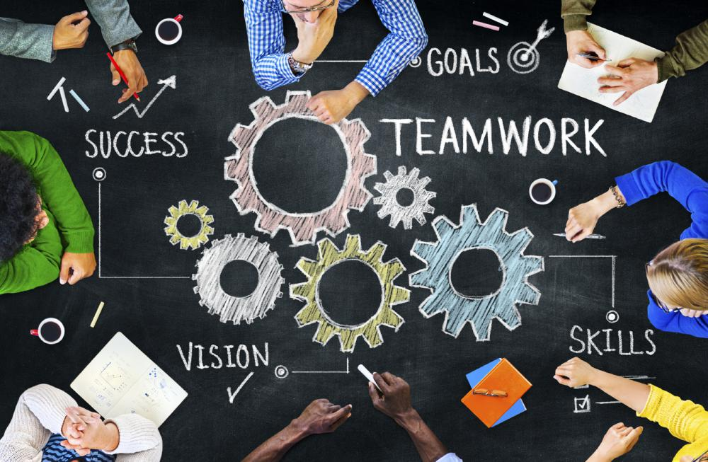

About Me
I am a 23 year-old Mechanical Engineering student in my 5th year at the University of Technology, Sydney.
Alongside studying full-time, I also work as a full-time junior hydraulic engineer at Sparks + Partners Consulting Engineers.
My current role within the engineering industry is to help build, design and coordinate in construction,
by adhering to Australian standards and hydraulic principles.
I have a broad range of skills, varying from programming knowledge, to CAD based softwares, to engineering principles. As previously mentioned,
my current tenure at a full-time engineering position allows me to identify how engineers co-operate with each other and more specifically with other disciplines.
Professional Experience
Sparks + Partners Consulting Engineers
In September 2020, I began my engineering career as a draftsperson,
applying CAD modelling and design intent to assist producing drawings of company standards.
From here, I was given multiple opportunities to work on small projects to hone my skills as an engineer.
As my skills began to improve, I was introduced to bigger projects, working on large industrial data centre warehouses,
to 20+ storey residential buildings. By building up my skillset, I was able to proportionally jump to bigger jobs.
Fast forward to the present time, I was presented the opportunity to become a team leader for the drafting team,
where I overlook project allocation for the team and assist teaching any drafting related skills and operations.
I have successfully assisted in achieving future works for multistage developments through communicating with clients,
applying theoretical and practical knowledge and professional presentation of myself and the company I represent.
Academic Experience
Bachelor of Engineering (Hons.) Diploma in Professional Engineering Practice
University of Technology, Sydney
I am currently within my final year (5th year student) of completing my Mechanical Engineering degree at the University of Technology Sydney,
I have overall accomplished a lot of theoretical and practical subjects, both individually and within a team.
Project Showcase: I am currently proud to be a part of a design team that is currently overlooking the University of Technology Sydney Motorsport Electrical formula SAE vehicle. We have been recently tasked to review and consider possible solutions of their vehicle's current design. Although we are in the very early stages of assisting the team, I have put in a considerable amount of time identifying existing designs, their principles, and how I can provide a solution that will help the group produce a suitable solution.
- Heat Transfer
- Fluid Dynamics
- Engineering Economics
- Dynamic Motion
- Mechanical/CAD Design
- Group Projects
Research
TBC
Leadership
As an individual with 2 years of engineering related experience, I have been fortunate to progress my skills both under leadership and in a leadership role. Currently at Sparks + Partners, I have progressed in my career into a team leader for the drafting team. This has provided me with the opportunity to advance my communication, managing and people skills.
This was achieved by consulting with my team on a weekly basis to delegate project tasks. Urgent tasks also illustrated my strength within my team working under pressure, by assisting in the work and further refining task allocation. I have also dedicated time to teach 2D & 3D modelling, hydraulic principles and overall experiences that I have faced.
Teamwork
Within my time working at S+P, I have almost worked for most of the time within a team setting, communicating not only with external clients, but internally as well with colleagues in order to produce an effective design. Some major projects that I have been fortunate enough to take part in include Ed Square residential designs, a multi-stage development containing over 300 townhomes, in which we have successfully worked on their 1-4 stages, allowing us to design their hydraulic systems. I was also assigned to assist in the design of a 40 storey building located in the centre of Sydney CBD, adjacent (and slightly hovering over) to central station, which I believe is a result of my hard work and developing skills.
